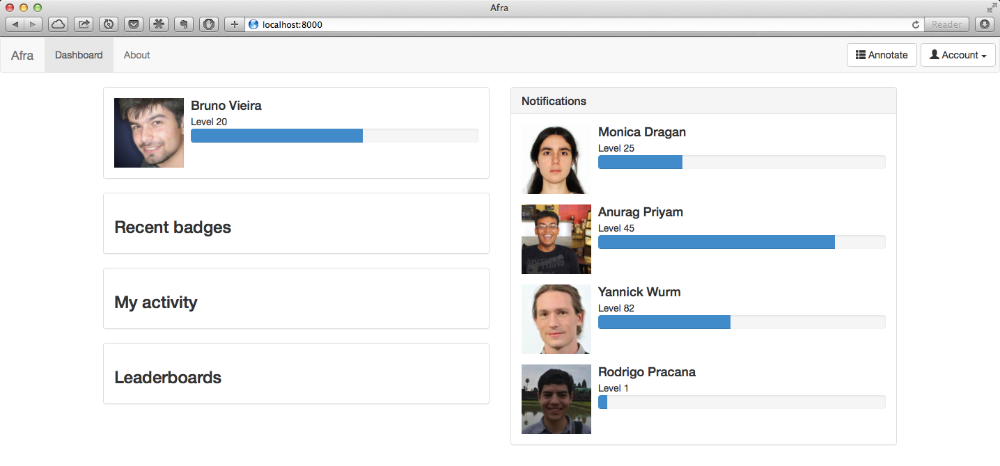

Crowdsourcing gene predictions & estimating population sizes
Bruno Vieira | @bmpvieira


Bioinformatics and Population Genomics
Initially address two issues
- Scaling gene prediction
- Ne inference in insects with the Pairwise Sequentially Markovian Coalescent (PSMC) method.
Two Projects
Afra & PSMC
Afra
Web application to crowdsource gene prediction
PSMC
Pairwise Sequentially Markovian Coalescent¹ method on insect genomes for inference of the population size history
¹ Li, H., & Durbin, R. (2011). Inference of human population history from individual whole-genome sequences. Nature, 475 (7357), 493–6. doi:10.1038/nature10231
Afra

Afra
Web application to crowdsource gene prediction
Web Application?
Gmail, Facebook, etc.
Afra
Web application to crowdsource gene prediction
Crowdsource?
Crowd + Outsource

Citizen Science

James Borrell | @James_Borrell
Citizen Cyberscience Summit 2014 | #ccs14
Self-reward helping Science
Zooniverse success

Lazy people don't care...

Cognitive surplus

Gamification
Useless game | Flappy bird
50 milion downloads | $50 000 per day
Useful | Genes In Space

Useful | Genes In Space
Afra
Web application to crowdsource gene prediction
Gene prediction?
Gene prediction

Gene prediction models

Sleator, R. D. (2010). An overview of the current status of eukaryote gene prediction strategies. Gene, 461 (1-2), 1–4. doi:10.1016/j.gene.2010.04.008
MAKER

Manual curation won't scale...

Afra Demo

Previous work
Main developer
Anurag Priyam | @yeban
WebApollo

Current work
Gamification
Dashboad mockup
Gamification
Dashboard HTML5 (incomplete)

Priority change
Annotation editing feature far from completion due to complexity of the project
Software Stack


Move most of the logic to the client side (browser) for scalability
Afra Stack


Bionode

Gamify
- Scores
- Open Badges
- Certificates of Expertise

Machine Learning
Use data generated by users to improve gene prediction models

Robert Simpson | @orbitingfrog
Citizen Cyberscience Summit 2014 | #ccs14
PSMC

PSMC
Pairwise Sequentially Markovian Coalescent¹ method on insect genomes for inference of the population size history
¹ Li, H., & Durbin, R. (2011). Inference of human population history from individual whole-genome sequences. Nature, 475 (7357), 493–6. doi:10.1038/nature10231
Theory
"The PSMC infers the local time to the most recent common ancestor (TMRCA) on the basis of the local density of heterozygotes, using a hidden Markov model"
H. Li & Durbin, 2011
Practice

H. Li & Durbin, 2011
Previous usages
- Evaluate the effect of historical climate changes, such as glacial periods, on a species[1]
- Measure the impact of anthropogenic activity in the decline of species[2]
- Discover unexpected population bottlenecks[3]
- Detect the time of divergence between populations[4]
- etc.
[1]: W. Miller & Schuster, 2012; Nadachowska-Brzyska et al., 2013;
[2]: S. Zhao et al., 2013;
[3]: Freedman et al., 2014;
[4]: H. Li & Durbin, 2011.
Not very used on insects... until now!

Use PSMC to answer some evolutionary questions
In insects, does Ne for solitary > social?
Experimental design
Run PSMC across a wide range of insects that evolved eusociality.


In ants colonies, does Ne for multi queen > single queen?
Experimental design
Run PSMC on many ant genomes, perhaps more than the seven genomes currently sequenced and publicly available
- Jerdon's jumping ant, Harpegnathos saltator (Bonasio, 2010)
- Florida carpenter ant, Camponotus floridanus (Bonasio, 2010)
- Argentine ant, Linepithema humile (Smith, 2011)
- Fire ant, Solenopsis invicta (Wurm, 2011)
- Two leafcutter ants, Atta cephalotes (Suen, 2011) and Acromyrmex echinatior (Nygaard, 2011);
- Red harvester ant, Pogonomyrmex barbatus (Smith, 2011).
Current work
Reproducing published results to master PSMC
- Li, H., & Durbin, R. (2011). Inference of human population history from individual whole-genome sequences. Nature, 475 (7357), 493–6. doi:10.1038/nature10231
- Freedman, A. H., Gronau, I., Schweizer, R. M., Ortega-Del Vecchyo, D., Han, E., Silva, P. M., ... Novembre, J. (2014). Genome Sequencing Highlights the Dynamic Early History of Dogs. (L. Andersson, ed.)PLoS Genetics, 10(1), e1004016. doi:10.1371/journal.pgen.1004016 a
Thank you!
 Bruno Vieira | @bmpvieira
Bruno Vieira | @bmpvieira
Anurag Priyam | @yeban
Yannick Wurm | @yannick__
© 2014 Bruno Vieira CC-BY 4.0
Summary
- Address data "deluge" with crowdsourcing and gamification
- Make WebApollo more scalable by moving logics to client side
- Implement biological logics in JavaScript as reusable module
- Master this method by reproducing published results
- In insects, does Ne for solitary > social?
- In ants colonies, does Ne for multi queen > single queen?